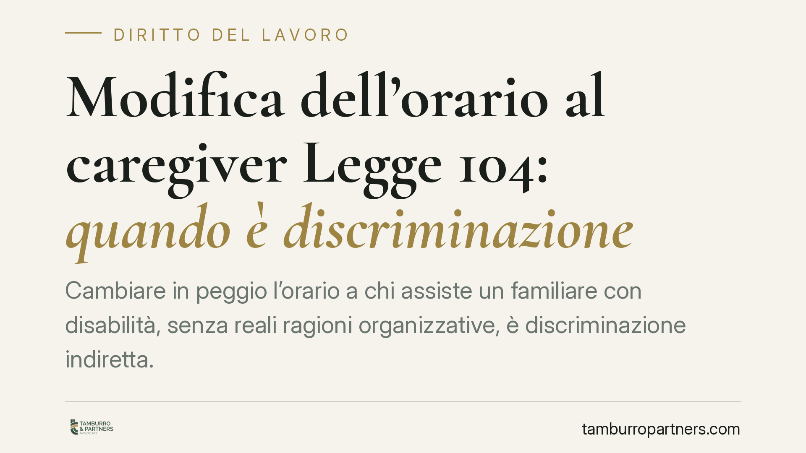

Modifica dell'orario al caregiver Legge 104: quando è discriminazione
Cambiare in peggio l'orario a chi assiste un familiare con disabilità, senza reali ragioni organizzative, è discriminazione indiretta. Lo ha stabilito il Tribunale di Treviso, che ha ordinato il ripristino dell'orario precedente e un risarcimento di 500 euro al mese. La decisione conferma un principio chiave: conta l'effetto sfavorevole della misura, non l'intenzione del datore di lavoro.

Il caso deciso a Treviso
Una lavoratrice che assiste un familiare con disabilità grave, titolare dei permessi previsti dalla Legge 104/1992, si è vista modificare l'orario di lavoro in senso peggiorativo. Il datore non ha indicato ragioni organizzative concrete a sostegno della variazione.
Il Tribunale di Treviso, con decisione del giudice Cusumano, ha qualificato la modifica come discriminazione indiretta. Il punto centrale: non serve dimostrare la volontà di penalizzare il caregiver. È sufficiente che una scelta apparentemente neutra produca un effetto svantaggioso su chi si trova in quella condizione. Il giudice ha ordinato il ripristino dell'orario precedente e un risarcimento di 500 euro mensili.
Inquadramento normativo
La Legge 104/1992 tutela le persone con disabilità e chi le assiste. L'articolo 33 riconosce ai familiari lavoratori permessi retribuiti e specifiche protezioni contro trattamenti sfavorevoli collegati all'attività di cura.
La nozione di discriminazione indiretta è definita dal D.Lgs. 216/2003 (attuazione della direttiva 2000/78/CE) e dal Codice delle pari opportunità (D.Lgs. 198/2006). Si ha discriminazione indiretta quando una disposizione, un criterio o una prassi in apparenza neutri mettono una persona in una posizione di particolare svantaggio rispetto ad altre, senza una giustificazione oggettiva.
Due elementi vanno sottolineati. Primo: la tutela si estende al *caregiver*, non solo alla persona con disabilità. La Corte di Giustizia UE, con la sentenza Coleman (C-303/06), ha riconosciuto la cosiddetta "discriminazione per associazione", che protegge chi subisce uno svantaggio a causa del legame con un soggetto disabile. Secondo: nel giudizio antidiscriminatorio opera un'inversione parziale dell'onere della prova. Il lavoratore deve allegare elementi di fatto idonei a fondare la presunzione di discriminazione; spetta poi al datore dimostrare che la misura risponde a esigenze oggettive e proporzionate.
Cosa cambia in concreto
Per il lavoratore caregiver la decisione rafforza una posizione già presidiata dalla legge. Se l'orario viene modificato in modo da ostacolare l'assistenza al familiare, e il datore non offre una giustificazione organizzativa reale, la misura può essere impugnata come discriminatoria. L'assenza di intento persecutorio non salva il datore: rileva l'effetto prodotto.
Per il datore di lavoro il messaggio è altrettanto netto. Le variazioni di orario che coinvolgono lavoratori titolari di permessi 104 richiedono cautela. Non basta il potere organizzativo astratto: occorre poter documentare la ragione concreta della modifica e la sua proporzionalità. In mancanza, il rischio è duplice: ripristino della situazione precedente e condanna al risarcimento, quest'ultimo determinabile anche in via periodica, come nel caso trevigiano.
Attenzione anche al profilo probatorio. La documentazione delle scelte organizzative – turni, carichi, esigenze di servizio – diventa decisiva. Una decisione presa senza tracce formali è più esposta al giudizio antidiscriminatorio.
Cosa fare in concreto
Se sei un lavoratore caregiver:
- Chiedi per iscritto le ragioni della modifica dell'orario e conserva la richiesta e l'eventuale risposta.
- Raccogli la documentazione che collega il tuo orario all'assistenza del familiare (certificazioni 104, organizzazione della cura).
- Valuta l'azione antidiscriminatoria ex art. 28 D.Lgs. 150/2011, procedura specifica e più rapida rispetto al giudizio ordinario, entro tempi ragionevoli dalla modifica.
Se sei un datore di lavoro:
- Prima di modificare l'orario di un dipendente con permessi 104, verifica e metti per iscritto l'esigenza organizzativa che la giustifica.
- Documenta il criterio applicato e la sua estensione anche ad altri lavoratori, per dimostrare la neutralità della misura.
In entrambi i casi, consigliamo di sottoporre la situazione a un esame legale prima di assumere iniziative unilaterali: la qualificazione di una scelta come discriminatoria dipende da elementi di fatto che vanno valutati caso per caso.
Il principio da ricordare
La pronuncia di Treviso ribadisce un concetto ormai consolidato nel diritto antidiscriminatorio: la tutela guarda al risultato, non alle intenzioni. Una misura organizzativa legittima sulla carta può diventare illecita se penalizza chi si prende cura di un familiare con disabilità e non trova una giustificazione oggettiva.
Ogni storia di lavoro ha i suoi tempi.
Se gestisci HR e vuoi un confronto su contenzioso, ispezioni o licenziamenti, scrivi allo studio. Ti rispondiamo entro un giorno lavorativo.